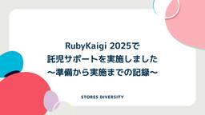
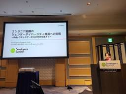
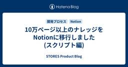

STORES Product Blog
https://product.st.inc/
こだわりを持ったお商売を支える「STORES」のテクノロジー部門のメンバーによるブログです。
フィード

RubyKaigi 2025で託児サポートを実施しました〜準備から実施までの記録〜 3
3
STORES Product Blog
こんにちは、技術広報のえんじぇるです。STORES はRubyKaigi 2025でNursery Sponsorとして、託児所の企画運営をしました。Nursery Sponsorとして協賛するのはRubyKaigi 2024に続いて2回目です。 3日間で0才〜10才までの合計23名のお子さんをお預かりし、保護者の方がRubyKaigiに集中できる環境を提供しました。本記事では実際にどのように準備したのか、どんな様子だったのかをお伝えします。カンファレンスやイベントで託児所の設置を考えている方の参考になれば幸いです。 RubyKaigi 2024の実施記録は下記からご覧ください。 produc…
2日前

MongoDBでnullの重複を許しつつユニークにしたいときの罠 2
STORES Product Blog
こんにちは！STORES ブランドアプリ のバックエンドエンジニアをしているotariidaeです。 最近 STORES ネットショップ にコントリビュートする機会があり、データベースとして採用されているMongoDBについて1つ学びを得たので記事にしたいと思います。 ユニークにしたい、でもnullの重複は許容したい 例えば users コレクションがあり、emailフィールドの値は一意にしたい、しかしnullの重複は許す、という要件を考えます。次のようなイメージです。 > db.users.find() [ { _id: ObjectId('682cb935c578d93e34a00aaa'…
2日前

Developers Summit 2025に登壇しました 1
STORES Product Blog
こんにちは、技術広報のえんじぇるです。 2025年2月14日にDevelopers Summit 2025にて登壇しました！ Rubyist友だちが撮ってくれた写真 Developers Summit 2023では、当時VPoEだったsa2daiさんが公募セッションで登壇することになり、 event.shoeisha.jp プロポーザル提出や登壇の準備をサポートし、当日現場のオンライン配信の会場にお邪魔させていただきました。Developers Summit 2024は久しぶりのオフライン開催とのことで一参加者として参加しました。（このデブサミでは廊下を楽しみました！） そして、Develop…
4日前
SaaS の引っ越しに伴うリダイレクト Chrome 拡張機能の実装方法 2
STORES Product Blog
STORES の社内 IT をいい感じにするお仕事をやっている howdy39 です。 元々使っていた SaaS のナレッジを Notion に引っ越すという記事を yubrot 氏が書いてくれました。 product.st.inc その記事の中に出てきていた 「旧ナレッジデータベース上のページのURLにアクセスしたら、移行先Notionページに自動リダイレクトする」 というChrome拡張を別途用意しました。 という部分ですが、このリダイレクトを行う Chrome 拡張機能の実装をしたので解説していきます。 SaaSの引っ越しに限らず、簡易的にリダイレクトしたいケースはあるかと思うので参考に…
4日前

10万ページ以上のナレッジをNotionに移行しました (スクリプト編) 58
STORES Product Blog
こんにちは。yubrotです。STORESではWebを主戦場に色々見ていますが、今回はそれとはまったく関係ない話をします。 事の始まり: Notionに社内のナレッジを集約する という意思決定を組織として行いました。1 STORESには、既に別のナレッジデータベースにこれまでのドキュメントがたくさん蓄積されていましたので、それをNotionにまるっと移行する必要があります。また、ナレッジの集約を目的としているため、元のナレッジデータベースは移行後に閉じる想定をします。そのため、 すべてのドキュメントを、 できるだけ情報の損失や読みやすさの低下を避けつつ、 全 STORES 社員が利用者が混乱し…
4日前

34. AIはコーディングがよくできるアルバイト/自分が仕事を楽しんでるかを考えることもマネージャの仕事【ep.34 #論より動くもの .fm】
STORES Product Blog
CTO 藤村がホストするPodcast、論より動くもの.fmの第34回を公開しました。今回は2025年1月にVP of Engineeringに就任したhogelogと、AIコーディングと仕事の中の遊びの話をしました。 creators.spotify.com 論より動くもの.fmはSpotifyとApple Podcastで配信しています。フォローしていただくと、新エピソード公開時には自動で配信されますので、ぜひフォローしてください。 VPoEになってどうですか？ 藤村：こんにちは、論より動くもの.fmです。 論より動くもの.fmは STORES のCTO 藤村が技術や技術じゃないことについ…
11日前
RubyKaigi 2025 で学生支援を行い、学生3名が参加しました！
STORES Product Blog
こんにちは、STORES でリクルーターをしておりますぐっち id:yk4yo12 と申します。 STORES では、Rubyコミュニティへの貢献の一環として、RubyKaigi 2025 に参加を希望する学生3名に学生支援サポート（宿泊交通費や参加費の支援）を行いました。 今回参加した学生の皆さんが、それぞれの視点で現地での体験をまとめてくれたレポートもあわせてご紹介します。 今回参加してくれた3名の学生の皆さん。STORES ロゴの前で記念撮影！ 🎓 学生支援を通じて伝えたかったこと Rubyをはじめ、STORES の開発ではさまざまな技術に日々向き合っています。その中で、技術そのものへの…
11日前
RubyKaigi 2025 に総勢35名で参加しました！みんなで書く感想レポート
STORES Product Blog
スポンサーボードにみんなの名前を書きました こんにちは、ima1zumiです。RubyKaigi 2025 お疲れさまでした！みなさん、RubyKaigi 2025と松山は楽しんでいただけましたか？私はみなさんの感想ブログを読みながらRubyKaigiの余韻に浸る生活をしています。RubyKaigi 2025が終わらない。 STORES はNursery Sponsorとして、託児所の企画・運営をしました。また、会場ではブースを出したり、会期中にSTORES CAFE for WomenとSTORES CAFE at RubyKaigi 2025を開催したりと、盛りだくさんな3日間でした。 こ…
16日前
RubyKaigi 2025 STORES ブース企画 IRB TreasureHunt Game ネタバレ解説記事
STORES Product Blog
こんにちは、STORES の id:hogelog です。 この記事では、RubyKaigi 2025の STORES ブースで公開されたIRB宝探しゲーム、IRB TreasureHunt Gameの作りとどんなお宝が隠されていたのかのネタバレを解説していきます。 このゲームは @mame がベースのアイデアと土台の実装をおこない、その上で主に @hogelog、一部 @ima1zumi がお宝のアイデアを実装しました。 ゲームの概要 このゲームは https://ruby-quiz-2025.storesinc.tech/ というURLにアクセスすると始まる、kateinoigakukun…
23日前
try! Swift Tokyo 2025 参加レポート
STORES Product Blog
こんにちは、STORES 決済 iOSエンジニアの nekowen です。 まずは try! Swift Tokyo 2025 お疲れ様でした！ 今年も STORES のメンバー10名が現地参加してきました。この記事では STORES で取り組んだことや、印象に残ったセッションについてみんなの感想をまとめていきたいと思います。 今年もSTORES メンバーが現地参加しました！ try! Swift Tokyo について 簡単に try! Swift Tokyo について紹介します。 try! Swift Tokyo は Swift に関する国際的なカンファレンスで、Swift の最新技術やナレ…
1ヶ月前
STORES のリリーストグル基盤を作りました
STORES Product Blog
STORES のykpythemindです。 STORES 株式会社 は25年3月末に、店鋪運営に必要な7サービスをまとめた新プランを低価格でリリースしました。 店鋪のためのレジ・キャッシュレス決済・ネットショップ・予約・会員管理システムなどをまとめて月額3300円で利用できるとても魅力的なプランになっています。サービスサイトはこちら。 さて、今回はこのリリースの裏側で自作のリリーストグルの仕組みを導入していました。STORES のtoggleで、stoggle (エストグル）と言います。 企画 我々は複数のプロダクトを統合して、より大きな価値を提供したいと考えています。 product.st…
1ヶ月前
Girls AI Scholarship by STORES を始めます
STORES Product Blog
プログラミング学習をたのしみながら続けるための支援として、AI活用によるプログラミング学習継続支援 Girls AI Scholarship by STORES を開始します！ STORES は、「2030年までに、エンジニア職における女性採用比率を30％以上にする」を目標に掲げ、これまでもSTORES Tech Girls Camp、Rails Girls Japanの協賛などテクノロジーのたのしさに「出会う」プログラムと、テックカンファレンスでの託児サポートや女性エンジニア向けランチ会など仲間と共に学びを「深める」ための活動をしてきました。 Girls AI Scholarship by …
1ヶ月前
RubyKaigi 2025 に STORES から5名が登壇、2名がLTに登壇します
STORES Product Blog
こんにちは、STORES のima1zumiです。RubyKaigi 2025では、STORES から5名が登壇、2名がLTに登壇します。 発表内容について登壇者それぞれから紹介します。ぜひトークを聞きに来てください！ Ruby Taught Me About Encoding Under the Hood 文字コードの面白さについて、自分の経験やRubyのUnicodeのバージョンアップの実装からお話します。文字をコンピュータで扱うとはどういうことなのか、その一端をお見せします。（ima1zumi) Make Parsers Compatible Using Automata Learnin…
2ヶ月前
STORES はRubyKaigi 2025も全力！ブース、ミートアップ、関連イベント、Nursery Sponsorのご紹介
STORES Product Blog
こんにちは、技術広報のえんじぇるです。RubyKaigi 2025が近づいてきましたね！ STORES はRubyKaigi 2025もNursery Sponsor（託児サポート）として協賛しています。 Nursery Sponsorの他にも、さまざまな取り組みをするので下見時の写真をまじえながら紹介させてください！ 松山空港で蛇口みかんジュースを飲みました Nursery Sponsor 今年もNursery Sponsorとして、20名弱のFuture Rubyistを託児所でお預かりします。Future RubyistにもRubyKaigiを楽しんでもらうため、キーホルダー作りや紙コッ…
2ヶ月前
SchemaSpyを使って最新のER図を保つ
STORES Product Blog
はじめに nannanyです。 STORES では今まさに複数のプロダクト・システムを横断して、ものづくりをしていくフェーズにいます。 言語・プロダクト・技術領域ごとになっていたWebエンジニアの採用ポジションを統合します - STORES Product Blog そのため、今まで関わってきたプロダクトから離れて、別のプロダクトを扱うようになる人も多くいます。 はじめて触るプロダクトを理解するために必要なものとはなんでしょうか？ 諸説あると思いますが、私はデータベースのER図を見ることがプロダクトの理解に大きく貢献すると考えています。 この記事ではSchemaSpyを利用して、最新のER図を…
2ヶ月前
言語・プロダクト・技術領域ごとになっていたWebエンジニアの採用ポジションを統合します
STORES Product Blog
STORES でソフトウェアエンジニアをしている morihirok です。 このたび STORES のエンジニア採用ポジションを大きく刷新し、これまで多数あった採用ポジションを「Web エンジニア」のひとつに統合しました。 このブログでは意思決定に至るまでの背景とその意図についてご紹介し、私たちが作っていきたい組織や挑戦する課題について知っていただければと思っております。 これまでどうなっていたか 前提として、STORES は複数のスタートアップが合併してできた会社です。 しばらくもともとの会社の単位で事業部制組織を取っていたため、エンジニアの採用ポジションも組織ごとに存在し、採用フローもエ…
2ヶ月前
PPL 2025で笹田がポスター発表をします＆プラチナスポンサーとして協賛します
STORES Product Blog
STORES は3月5日（水）〜7日（金）に開催される第27回プログラミングおよびプログラミング言語ワークショップ PPL 2025にプラチナスポンサーとして協賛します。 発表 Rubyコミッターの笹田がポスター発表にて採択されました。 『RubyにおけるRactorローカルGCにむけて C3 ポスター』 発表者：笹田 耕一 日時：3月6日（木）20:00–21:00 セッション12 ポスター・デモ(2) グループB スポンサーブース スポンサーブースではアンケートにお答えいただいた方に、ノベルティをお渡しします。 ノベルティは、STORES を利用されている愛知県の事業者さんの商品やオリジナ…
3ヶ月前
STORES はINTERACTION 2025に協賛します
STORES Product Blog
STORES は、3月2日〜4日に開催されるINTERACTION 2025に協賛します。 www.interaction-ipsj.org Women’s Luncheon 女性研究者の交流を促進し、日本国内のインタラクション研究全体を盛りあげることを目的としたWomen’s Luncheonのスポンサーをしています。当日は、VP of People Experienceの佐俣がゲストトークとしてお話しします。 www.interaction-ipsj.org 展示ブース 展示ブースでは、STORES レジ と STORES 決済 のデモを体験いただけます。 またノベルティとして、STORE…
3ヶ月前
賞味期限切れのissueを無慈悲に閉じよう
STORES Product Blog
こんにちは！STORES ブランドアプリ のバックエンドエンジニアをしているotariidaeです。春風の季節ですね。たまに風で舞い上がった砂塵が目に入ってつらいです。 issue管理の課題 さて、私が所属する開発チームではGitHub Projectsを用いてバックログを管理しています。バックログアイテムはissueとして作成される形となり、GitHubとネイティブに統合された円滑な開発体験が構築できてすごく便利です。 しかし、issueはともすると完了される速度よりも新しく起票される速度の方が大きくなります。そうすると管理コストが増大するという問題が生じます。内容を最新の状態に保ったり、優…
3ヶ月前
3ヶ月間の挑戦と成長：個人としての学びと成果を振り返る
STORES Product Blog
はじめに テクノロジー部門QAグループの梅内です。 私は2023年8月からQAグループのテスターとして働いているのですが、QAは全くの未経験で入社しました。入社から約1年、やっと慣れてきたなと思っていた2024年7月にQAグループ内での新チームが発足し、新OSや新端末の対応方針の策定や、動作確認・検定の管理をする「保証スコープ管理チーム」の所属となりました。 「保証スコープ管理チーム」発足から約3ヶ月間、さまざまな課題に向き合いながら業務を進める中で、スケジュール管理やフロー整備、外部とのやり取りなど、多岐にわたる業務を経験しました。本記事では、その過程で取り組んだ業務や身につけたスキルを振り…
3ヶ月前
Women in Agile Tokyo 2025に協賛します
STORES Product Blog
STORES は、2月4日・5日に開催されるWomen in Agile Tokyo 2025に協賛します。 www.wiajapan.org スポンサートークの紹介 タイトル：STORESのQAチームが開発スクラムに参加して見えてきた成果と気づき 登壇者：Nazuki Kaneko 日時：2月4日（火）14:00〜 場所：ROOM C confengine.com スポンサーブース STORES のブースでは、STORES のconnpassグループメンバーになっていただくと、くじにチャレンジできます。 くじの賞品は、STORES を利用されているオーナーさんの商品です。ぜひブースに遊びに来…
4ヶ月前
開発版のRubyを用いてCIを定期実行する試みとその成果
STORES Product Blog
こんにちは。本記事は ykpythemind、mame、 ko1 が共著しています。 今回は開発版のRuby(Ruby head)を用いてSTORESのRailsアプリケーションのCIを定期実行していることと、それによってRuby本体の開発にフィードバックをしていることについてお話します。 モチベーション STORES はRubyを用いて10年選手のRails製アプリケーションを複数開発・運用しており、事業の柱となる技術として大きく投資をしています。 具体的にはRubyのフルタイムコミッター2名がジョインしていたり、RubyKaigiを始めとする各カンファレンスへ協賛をしております。 prod…
4ヶ月前
STORES はRubyKaigi 2025に参加したい学生さんを支援します
STORES Product Blog
こんにちは、id:hogelogです。2025年1月よりSTORES で VP of Engineeringという役職で仕事をしていくこととなりました。（宣伝） VPoEとして始めてのご挨拶ブログがRubyKaigi学生支援告知ブログになるというのもなかなか乙なものですね。 さて、今回はじめての試みとして学生のRubyKaigi参加を支援させていただきます。 チケット代や交通費・宿泊費を負担することなく、カンファレンスに参加いただけます。 本記事では支援の概要と、応募方法を案内させていただきます。 今回ささやかながらRubyKaigi 2025に参加したい学生さんを支援させていただくこととしま…
4ヶ月前
東京Ruby会議12で「混沌とした例外処理とエラー監視に秩序をもたらす」というタイトルで登壇しました
STORES Product Blog
STORES でソフトウェアエンジニアをやっております @morihirok です。タイトルの通り先日行われた東京Ruby会議12で登壇しました。 regional.rubykaigi.org 発表資料はこちらとなります。 speakerdeck.com STORES は Sliver Sponsors として協賛させていただきました。 会自体すごく大盛況で、前夜祭から懇親会まで含めてめちゃくちゃ楽しかったです！オーガナイザー、スタッフのみなさま、素晴らしい会を本当にありがとうございました！ 今回「Regional.rb and the Tokyo Metropolis」というタイトルで東京圏…
4ヶ月前
技術的負債ではなく庭なのではないか。庭活のすゝめ。【ep.33 #論より動くもの .fm】
STORES Product Blog
CTO 藤村がホストするPodcast、論より動くもの.fmの第33回を公開しました。今回はykpythemind（以下、ykpy）とyubrotと、技術的負債ではなく庭なのではないかという話をしました。 creators.spotify.com 論より動くもの.fmはSpotifyとApple Podcastで配信しています。フォローしていただくと、新エピソード公開時には自動で配信されますので、ぜひフォローしてください。 コードベースを自分の庭にする 藤村：こんにちは、論より動くもの.fmです。 論より動くもの.fmは STORES のCTO 藤村が技術や技術じゃないことについてざっくばらん…
4ヶ月前
一括生成された大量のデータを効率的に基盤システムへ送信する設計
STORES Product Blog
はじめに 基盤システムへのデータ送信 コールバックを利用したデータ送信 課題 データ作成のバッチと送信処理を分ける 実装の概要 バッチ処理で作成された事実を記録するテーブルを用意 バッチ処理でのログ記録 コールバック処理 送信バッチ処理 まとめ はじめに こんにちは、mochizukiです。 STORES には、ネットショップ、予約システム、POSレジなど、複数のプロダクトがあります。これらは元々独立して開発されてきたものですが、現在ではサービス間の連携を進め、新たな価値を提供する取り組みを行っています。 詳しくはこちら product.st.inc その中で私が所属するチームでは、各プロダク…
4ヶ月前
東京Ruby会議12に2名が登壇＆Silver Sponsorとして協賛します
STORES Product Blog
STORES は、1月18日(土)に開催される東京Ruby会議12にSilver Sponsorとして協賛します。 regional.rubykaigi.org 登壇者の紹介 STORES から2名が登壇します！意気込みを聞きました！ 前夜祭（1月17日） 時間：20:20〜 タイトル：An OptCarrot Retrospective 登壇者：mame 「Rubyを3倍に高速化する」というスローガン"Ruby 3x3"のベンチマークプログラムだったoptcarrotは、9年前に開催された東京Ruby会議11で発表したものでした。その後、optcarrotは予想以上に反響を呼び、さまざまな成…
4ヶ月前
Action Mailerに学ぶ闇の魔術と闇の魔術に対する防衛術
STORES Product Blog
はじめに STORES 予約でエンジニアをやっている@ucksです。 大体年内にやりたかったタスクが捌けてきたので空いた時間でブログを書いています。 Railsからのメール送信でお世話になるAction Mailer。 インスタンスメソッドを定義しているのにクラスメソッドから呼び出しをしています。 どの様な仕組みになっているのか不思議に思ったことはないでしょうか。 様々な方法で、OSSのソースコードを追うことがあると思いますが、今回は追い方の一例として、実際のAction Mailerのロジックを追いながら、どの様な仕組みになっているのか、参考になるロジックはあるのかを、探索したり、拡張できな…
5ヶ月前
ジオコーディングとGeolocation APIを用いて店舗と現在地との距離を計算する
STORES Product Blog
はじめに 初めまして、STORES でエンジニアをしているhiromu617です。この度、STORES では、STORES モバイルオーダーというサービスをリリースしました。 www.st.inc 今回は、STORES モバイルオーダー内に現在地から店舗までの距離を表示してみようと思います。 なお、モバイルオーダーを開発する上での取り組みについて、wanijiさんが紹介されているのでこちらも合わせて閲覧していただけると幸いです。 product.st.inc やりたいこと STORES モバイルオーダーには、注文する店舗を選択するための店舗一覧画面が存在します。 モバイルオーダーの店舗一覧画面…
5ヶ月前
モノレポでのVSCode Dev Container
STORES Product Blog
STORES 予約 でエンジニアをしている水野です。VSCode Dev Containerを利用すると開発環境のセットアップが迅速化されたり必要なライブラリ、ツールをコード化できたりとメリットが多いため導入している現場も多いかと思います。 STORES 予約 でもVSCode Dev Containerを利用しています。しかし今後モノレポな環境に携わる機会が見えたとき、そういえばモノレポでもVSCode Dev Containerって使えるんだっけ？となったので調べてみました。 Multiple containers モノレポの場合は公式で紹介されているMultiple containers…
5ヶ月前